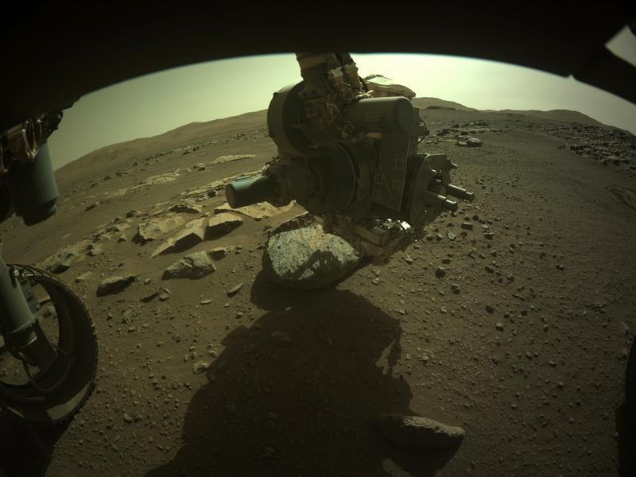
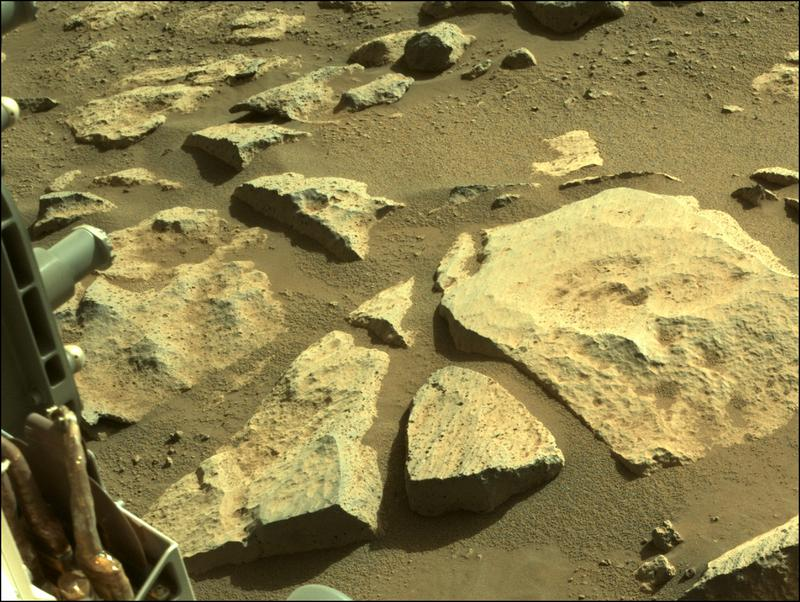
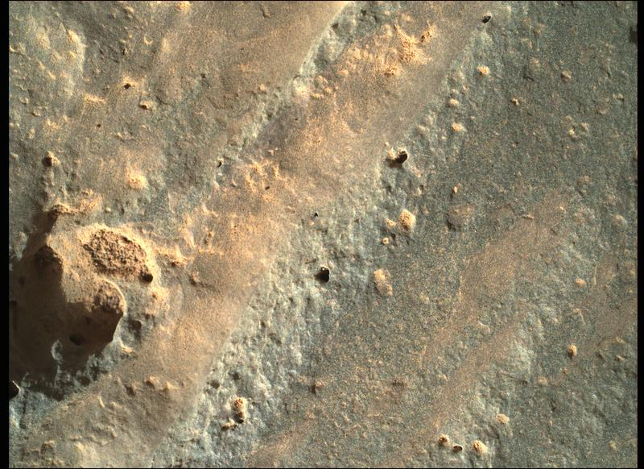

NASA MARS 2020 / JEZERO
A mission to Rochette
MRO · CTX / OPTICALLoading evidence…
Local CTX imagery · route driven by a separate numerical terrain grid
Terrain-aware routeDirect baselineAbove assumed slope limit
Lower slopeHigher slope
500 m
NASA / MSSS / Caltech · CTX
Map imagery is unavailable.
The numerical terrain model and plan can still be inspected in the evidence panel.
The numerical terrain model and plan can still be inspected in the evidence panel.
Hover or tap the map to inspect the terrain cell.
Your exploration plan
LOADING TERRAINThe label checks the assumed terrain limit and time reserve in the displayed scenarios. It is not a safety clearance.
Configured reserve: 45 min · Walkback rule: if your pace drops 25% on the way back, leaving Rochette by this time still preserves the reserve. Inspired by the walkback limits used to plan Apollo rover traverses.
WalkingScienceReserve
Numerical terrain is loading. A route will be calculated only after its coordinates and grid have been validated.
WHY THIS ROUTE
What changes when terrain matters?
A DECISION IN THREE STEPS
Same assumptions for both routes. Time and reserve use the conservative scenario.
Lower mapped slope and more time reserve are different priorities. The cost index does not establish which route is safer.
Method details
Relative cost = distance × [1 + 4 × (slope / limit)²]. A prototype weighting, not metabolic energy.
What comes from data, and what is assumed?
- Source data
- NASA rover waypoint, orbital imagery and USGS elevation data. Mapped slope is derived from elevation.
- Planning assumptions
- A hypothetical habitat location; editable time, walking pace, science duration, reserve and slope limit. Route and time are model outputs.
- Still unverified
- Independent verification of image/terrain alignment and comprehension by real users. These validations are still pending.
Elevation along the outbound route
Elevations sampled from the USGS model. The return retraces this path.
If the walk takes longer
These are explicit what-if scenarios, not statistical confidence intervals.
| Scenario | Pace | Mission time | Time left | Reserve check |
|---|---|---|---|---|
| — | ||||
Faster: pace ×1.20, work ×0.85. Conservative: pace ×0.75, work ×1.25. Return is included in every scenario.
What can altered basalt tell us about water in Jezero?
Rochette is a basaltic rock workspace associated with the Montdenier and Montagnac samples. NASA describes salts that may record interaction with water. The proposed EVA would document textures and mineral context; it does not claim evidence of life.
NASA waypoint 7_0, sol 180. This is a rover workspace position, not the exact center of a drill hole. Decimal precision is not a statement of geodetic accuracy.
Every layer has a job.
CTX optical · inspect surface context
CTX DEM · constrain and weight the route
THEMIS infrared · regional context only
Perseverance cameras · what the workspace looks like
GROUND TRUTH · PERSEVERANCE AT ROCHETTE
What you will see when you arrive
Raw images taken by Perseverance at site 7, drive 0: the same position as NASA waypoint 7_0 used as the mission target.



Raw, uncalibrated images; colors are approximate. They show the rover’s view in 2021, not current conditions. Select an image to open its NASA source page.